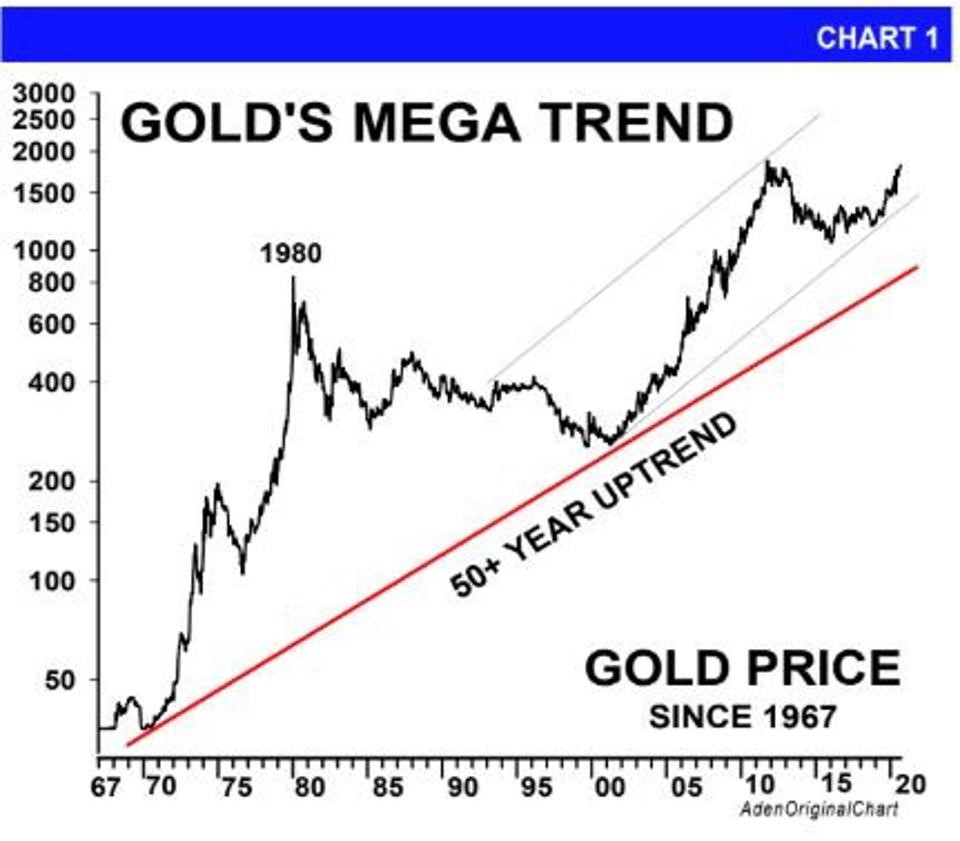
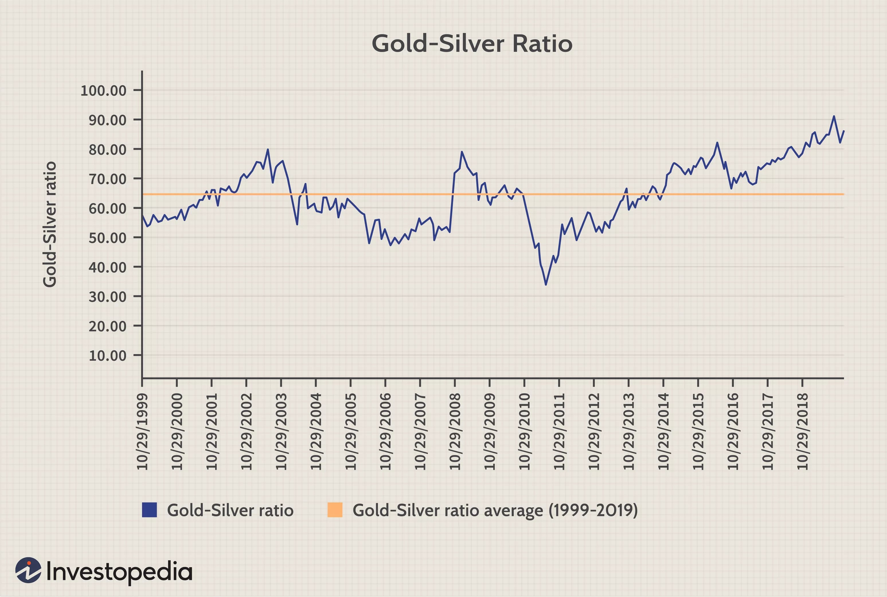

The gold standard is a monetary system where a country's currency or paper money has a value directly linked to gold. With the gold standard, countries agreed to convert paper money into a fixed amount of gold. A country that uses the gold standard sets a fixed price for gold and buys and sells gold at that price. That fixed price is used to determine the value of the currency. For example, if the U.S. sets the price of gold at $500 an ounce, the value of the dollar would be 1/500th of an ounce of gold.
The Legacy of Gold
Once the gold standard was dropped, countries began printing more of their own currency, which resulted in inflation but also more economic growth. Although there are advocates for a return to the gold standard, it appears unlikely that those days will return. Economists regard the gold standard as necessary during its time, but no longer applicable in the modern world economy.
Gold continues to have appeal as an asset of real value. Whenever a recession or inflation looms, investors return to gold as a safe haven. It reached its record high of $1,895 an ounce on September 5, 2011.
Bartering, Precious Metals, and Mints
We begin with a simple barter economy in which individuals exchange goods and services directly, without using money. In a barter economy, certain commodities will come to be sought after not only because they satisfy the wants and needs of their owners, but also because they are durable and easy to exchange. Such commodities will provide their owners with a means through which to store wealth for consumption at a later date, by trading. On this measure, metals–specifically, precious metals–will score very high, and will be conferred with a trading value that substantially exceeds their direct and immediate usefulness in everyday life. The Father of Economics himself explains.
Paradigm Shift: The Development of Fractional-Reserve Free Banking
Up to now, all we have for money are precious metals–coins and bars of gold and silver. There are promises, there is borrowing, there is debt–but these are not redeemable on demand for any defined amount. Anyone who accepts them as payment must accept illiquidity or the risk of mark-to-market losses if the holder chooses to trade them.
The paradigm shift that formally connected borrowing and debt with securities redeemable on demand for a defined amount occurred with the development of free banking. Historically, savers sought to keep their supplies of gold and silver–in both coin and bar form–in safe deposits maintained by goldsmiths. The goldsmiths would charge a fee for the deposit, and would issue a document–a banknote–redeemable for a certain amount of gold and silver on the holder’s request. Given that the goldsmiths generally had reputations as honest dealers, the banknotes would trade in the market as if they were the very gold and silver that they could be redeemed for.
Eventually, the goldsmiths realized that not everyone came to redeem their gold and silver deposits at the same time. The gold and silver deposits coming in (i.e., the banknotes being created) would generally balance out with the gold and silver deposits leaving (i.e., the banknotes being redeemed). This balancing out of incoming and outgoing deposit flows allowed the goldsmiths to issue more banknotes than they were storing in actual gold and silver. They could print and loan out banknotes in excess of the gold and silver deposits that they actually had on hand, and receive interest in compensation. Thus was born the phenomenon of fractional-reserve banking.
Advantages and Disadvantages of Gold

Advantages
• Fixed assets back the money's value
• Provides a self-regulating and stabilizing effect on the economy
• Discourages inflation
• Discourages government budget deficits and debt
• Rewards productive nations
Disadvantages
• A country's economy is dependent upon its supply of gold
• Countries fixate on keeping their gold
• Actions to protect gold reserves caused significant fluctuations in the economy
Advantages Explained
The benefit of a gold standard is that a fixed asset backs the money's value. Proponents of a gold standard say it provides a self-regulating and stabilizing effect on the economy. Under the gold standard, the government can only print as much money as its country has in gold. That discourages inflation, which happens when too much money chases too few goods. It also discourages government budget deficits and debt, which can't exceed the supply of gold.
A gold standard rewards the more productive nations. For example, they receive gold when they export. With more gold in their reserves, they can print more money, in turn boosting investment in their profitable export businesses. The gold standard spurred exploration also prompted the Gold Rush in California and Alaska during the 1800s.
Disadvantages Explained
One problem with a gold standard is that the size and health of a country's economy are dependent upon its supply of gold. The economy is not reliant on the resourcefulness of its people and businesses. Countries without any gold are at a competitive disadvantage.
The United States never had that problem. It was the world's second-largest gold mining country after Australia. Most gold mining in the United States occurs on federally owned lands in 12 western states. According to the National Mining Association, Nevada is the primary source. Many developing countries are also major gold producers.
The gold standard makes countries obsessed with keeping their gold. They ignore the more important task of improving the business climate. During the Great Depression, the Federal Reserve raised interest rates. It wanted to make dollars more valuable and prevent people from demanding gold, but it should have been lowering rates to stimulate the economy.
The Gold Standard vs. Fiat Money

As its name suggests, the term gold standard refers to a monetary system in which the value of currency is based on gold. A fiat system, by contrast, is a monetary system in which the value of currency is not based on any physical commodity but is instead allowed to fluctuate dynamically against other currencies on the foreign-exchange markets. The term "fiat" is derived from the Latin "fieri," meaning an arbitrary act or decree. In keeping with this etymology, the value of fiat currencies is ultimately based on the fact that they are defined as legal tender by way of government decree.
In the decades prior to the First World War, international trade was conducted on the basis of what has come to be known as the classical gold standard. In this system, trade between nations was settled using physical gold. Nations with trade surpluses accumulated gold as payment for their exports. Conversely, nations with trade deficits saw their gold reserves decline, as gold flowed out of those nations as payment for their imports.
What Is the Gold-Silver Ratio?
The gold-silver ratio, also known as the mint ratio, refers to the relative value of an ounce of silver to an equal weight of gold. Put simply, it is the quantity of silver in ounces needed to buy a single ounce of gold. Traders can use it to diversify the amount of precious metal they hold in their portfolio.
Here's how it works. When gold trades at $500 per ounce and silver at $5, traders refer to a gold-silver ratio of 100:1. Similarly, if the price of gold is $1,000 per ounce and silver is trading at $20, the ratio is 50:1. Today, the ratio floats and can swing wildly.1 That's because gold and silver are valued daily by market forces, but this has not always been the case. The ratio has been permanently set at different times in history and in different places, by governments seeking monetary stability.